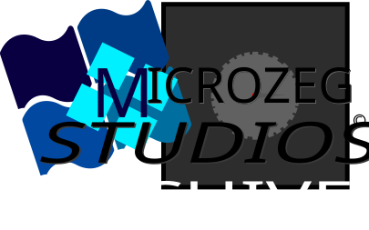
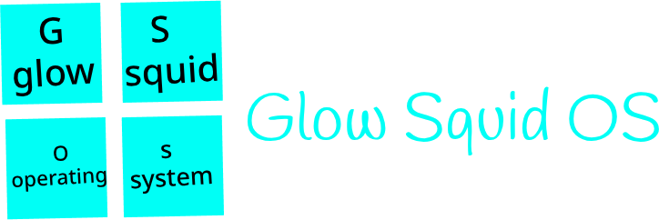
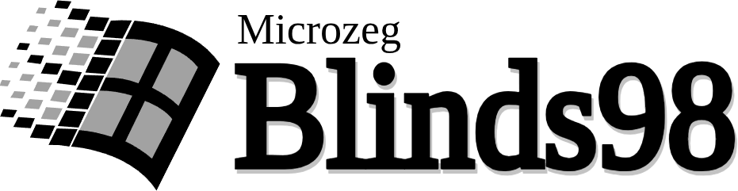
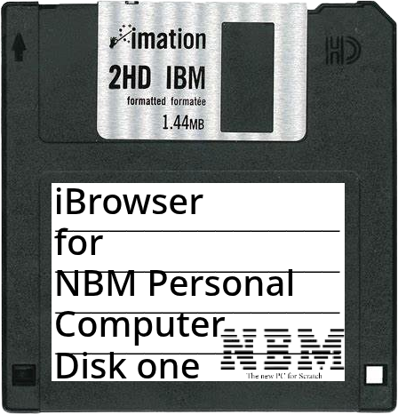
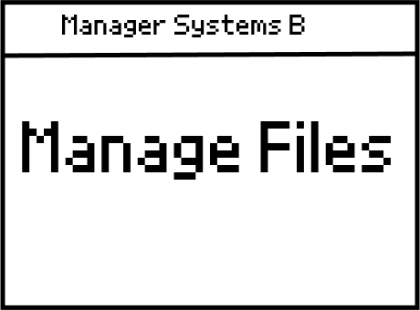
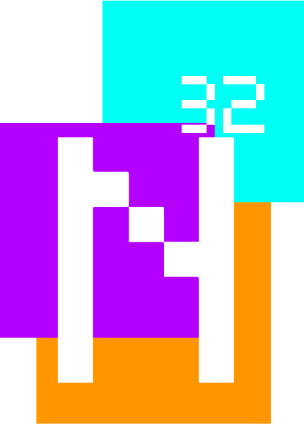
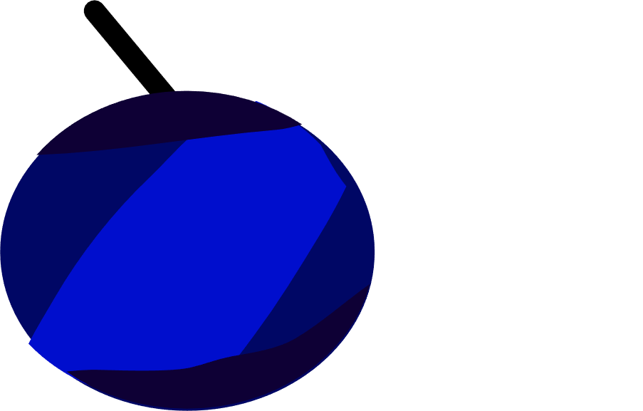

An archive of our older projects.(mainly operating systems)

The previous operating system by Microzeg Studios.
Being quite basic, we do not recommend using this OS for daily use.
Jan 27th, 2022 - Jan 2nd, 2023

An experimental disk browser operating system by Microzeg Studios.
Being extremely basic, we strongly advise against using this OS for daily use.
Jun 17th, 2022 - Dec 10th, 2022

Multi-purpose command-line operating system.
Was succeeded by iBrowser 2.1, a web browser for Scratches.
Jun 17th, 2022

An experimental disk browser operating system by Microzeg Studios.
Development Only lasted for three Days.
Jun 19th, 2022 - Jun 21st, 2022

A very basic kernel.
Editions include plus, 64 and Gaeilge.
Apr 19th, 2022 - May 13th, 2022

A basic
raspberry pi remake in scratch.
May 2nd, 2022 - Jul 6th, 2022